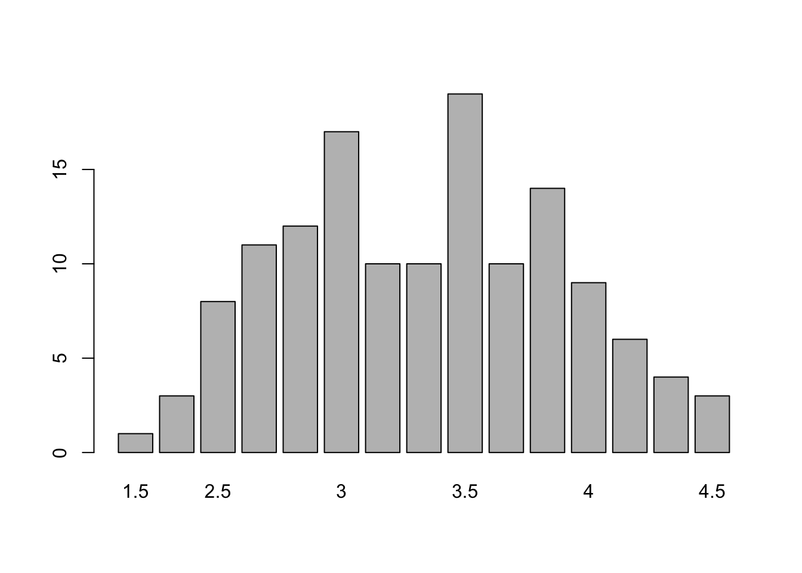

Capítulo 2 R en Acción: Analizando un Ejemplo
R es una herramienta de análisis muy poderosa. El propósito de este capítulo es principalmente mostrar qué cosas puede hacer R. Si bien se explican los objetivos del análisis de datos para cada celda junto con el código utilizado, la idea principal es ilustrar algunas de sus funcionalidades y no explicar el código de forma extensa. Para eso, está el resto del libro.
2.1 Cargando una Base de Datos desde la Web y otras Funcionalidades
Entonces, lo primero que vamos a hacer es cargar la base de datos para ejecutar nuestros ejemplos. Para esto, vamos a darle un nombre o etiqueta a nuestra base de datos dataset, luego utilizaremos el operador de asignación <- y al lado derecho usaremos la función read.csv() de R, el cual permite leer la base de datos llamada emociones_academicas.csv. Nótese que la base de datos esta alojada en una pagina web y no en nuestro computador personal. Esto ya en sí mismo muestra su poder sobre otras software tales como SPSS. Inmediatamente abajo del código de la base de datos, utilizaremos la función names para observar el nombre de las variables contenidas en la base de datos y su número, el cual se encuentra impreso justo debajo de la celda.
dataset <- read.csv("https://raw.githubusercontent.com/danielivanperez/dataset_ejemplo_libro_r/main/emociones_academicas.csv")
names(dataset)## [1] "participante" "edad" "sexo" "Nivel" "calificacion_1"
## [6] "calificacion_2" "calificacion_3" "calificacion_4" "calificacion_5" "promedio"
## [11] "emo_aca_1" "emo_aca_2" "emo_aca_3" "emo_aca_4" "emo_aca_5"
## [16] "emo_aca_6" "emo_aca_7" "emo_aca_8" "emo_aca_9" "emo_aca_10"
## [21] "emo_aca_11" "emo_aca_12"Una de las funciones más útiles de R es poder observar un conjunto acotado de filas, observaciones o, en nuestro caso participantes, de la base de datos con la cual se trabaja. Para esto, vamos a usar la función head(). Al ejecutar esta función, R nos muestra las primeras 6 filas de la base de datos.
head(dataset)## participante edad sexo Nivel calificacion_1
## 1 1 19 Femenino 201 4.8
## 2 2 20 Femenino 201 Psicología del desarrollo infanto juvenil 4.7
## 3 3 20 Femenino 201 Desarrollo infanto-juvenil 3,9
## 4 4 20 Femenino 201 Metodologia de la investigación en psicología 38
## 5 5 24 Femenino 302 Psicología educacional 5.0
## 6 6 19 Femenino 201 neuropsicología 37
## calificacion_2 calificacion_3
## 1 3.4 4.6
## 2 Psicología Comunitaria 4.0 Teoría Psicoanalítica 3.2
## 3 Teorias cognitivas 4,9 Metodologia de investigacion 4,8
## 4 Teoria del desarrollo infanto juvenil 53 Teorias cognitivas 48
## 5 Tecnicas proyectivas 6.5 Gestion de personas y desarrollo organizacional 6.3
## 6 metodología de la investigacion en psicologia 30 infanto juvenil 47
## calificacion_4
## 1 3.8
## 2 Teorías cognitivas 3.2
## 3 Psicología comunitaria 4,1
## 4 Psicología comunitaria 33
## 5 Construcción de pruebas e instrumentos de evaluación 5.6
## 6 psicología comunitaria 52
## calificacion_5 promedio emo_aca_1 emo_aca_2 emo_aca_3 emo_aca_4
## 1 3.6 NA 4 2 3 2
## 2 Metodologías de investigación en psicología 3.3 NA 4 1 3 3
## 3 Teoria psicoanalitica no NA 4 3 3 4
## 4 Psicoanalítica 38 NA 3 3 2 3
## 5 psicopatologia infanto juvenil 5.0 NA 3 1 4 4
## 6 psicoanalisis 37 NA 3 1 3 4
## emo_aca_5 emo_aca_6 emo_aca_7 emo_aca_8 emo_aca_9 emo_aca_10 emo_aca_11 emo_aca_12
## 1 3 2 4 2 3 2 3 3
## 2 4 1 2 3 4 1 3 4
## 3 3 3 4 2 3 4 3 3
## 4 2 4 3 3 3 2 3 4
## 5 4 1 4 1 4 2 4 4
## 6 4 1 3 2 3 1 2 5El código de arriba nos muestra las respuestas de los primeros 6 sujetos de nuestra base de datos. Podemos fácilmente ver que la salida o output que nos da R es relativamente extensa. Sería muy ineficiente siempre estar imprimiendo bases de datos de forma completa. Por esta razón, es mucho mejor trabajar viendo un número limitado de variables al mismo tiempo. Empecemos con el caso más simple de explorar solo una variable. A continuación, vamos a mostrar como utilizar el símbolo dólar $, el cual nos permite seleccionar una columna o variable de la base de datos. Para proseguir con el ejemplo, nos centraremos en la variable calificacion_1. De este modo, primero escribimos el nombre de la base de datos, seguido del signo dólar y, luego, seleccionar o escribir el nombre de la variables deseada.
head(dataset$calificacion_1)## [1] "4.8" "Psicología del desarrollo infanto juvenil 4.7 "
## [3] "Desarrollo infanto-juvenil 3,9" "Metodologia de la investigación en psicología 38"
## [5] "Psicología educacional 5.0" "neuropsicología 37"La salida de R nos muestra las primeras 6 filas de la variable calificacion_1. Para mencionar otra forma útil de selección de columnas que usaremos más abajo, está elegir un rango de columnas como por ejemplo:
dataset[5:9] ## calificacion_1
## 1 4.8
## 2 Psicología del desarrollo infanto juvenil 4.7
## 3 Desarrollo infanto-juvenil 3,9
## 4 Metodologia de la investigación en psicología 38
## 5 Psicología educacional 5.0
## 6 neuropsicología 37
## 7 Neuropsicología 5.5
## 8 Teorias humanistas 1.0
## 9 Teorías cognitivas 34
## 10 Electivo General 6.2
## 11 Teorías cognitiva 3,6
## 12 Metodología de la investigación en psicología 64
## 13 Desarrollo infanto juvenil 5,6
## 14 Neuropsicologia 34
## 15 Teorías Cognitivas 3,8
## 16 Teoría humanista
## 17 Teorias cognitivas 30
## 18 Neuropsicologia 2,7
## 19 Metodología 4.4
## 20 Teorías cognitivas 33
## 21 Teorías cognitivas 5,4
## 22 Neuropsicología 54
## 23 Análisis cuantitativo 38
## 24 teorias cognitivas 2,8
## 25 No
## 26 NEUROPSICOLOGIA 5.7
## 27 Análisis Cualitativo 5.6
## 28 Psicoanalítica 61
## 29 Teorias psicoanaliticas 31
## 30 Técnicas Proyectivas 7.0
## 31 METODOLOGÍAS DE INVESTIGACIÓN EN PSICOLOGÍA 5,9
## 32 METODOLOGÍAS DE INVESTIGACIÓN EN PSICOLOGÍA 5.0
## 33 NEUROPSICOLOGÍA (3,2)
## 34 Metodologías de investigación en psicología 4,2
## 35 Teorias Cognitivas 3,0
## 36 psicopatologia del adulto 44
## 37 Neuropsicologia 39
## 38 Teoría infanto juvenil 5,2
## 39 Metodologías de investigación en psicología 3.1
## 40 psicopatologia infanto-juvenil 4.0
## 41 NO
## 42 Metodo
## 43 ELECTIVO GENERAL I 6.2
## 44 Metodologia de investigacion en psicologia 33
## 45 inglés 70
## 46 Metodologia de investigacion en Psicologia 3.5
## 47 Gestion de personas 5.4
## 48 Teorias cognitivas 4,8
## 49 metodología de la investigación en psicología 1,0
## 50 Neuropsicología 30
## 51 Psicologia de desarrollo infanto juvenil
## 52 Psicopatologia infanto juvenil 48
## 53 psicoanalisis 45
## 54 Ingles 1 = 6.0
## 55 Teorías cognitivas 36
## 56 Desarrollo infanto juvenil 41
## 57 Metodologías de investigación en psicología 1,8
## 58 Bases biológicas de la conducta humana 2.0
## 59 Gestión de personas 5.0
## 60 Metodologia de la investigacion en psicologia 2,3
## 61 Psicología general 4.1
## 62 Psicología General 3.4
## 63 Bases biológicas , ?
## 64 Psicología general 59
## 65 PSICOLOGÍA GENERAL 4.0
## 66 Psicologia general 1
## 67 Psicologia General, 5.9
## 68 Psicologia general 60
## 69 Bases biologicas
## 70 Psícologia general 4.2
## 71 Teorías de la comunicación 5,2
## 72 Bases Biológicas 2,6
## 73 Psicología 6.5
## 74 epistemologia 48
## 75 Psicología general 5.9
## 76 Psicología General 6,3
## 77 Bases Biologicas 1,8
## 78 Psicolología general 6,3
## 79 Psicología General 6.1
## 80 EPISTEMOLOGIA DE LAS CIENCIAS 3.0
## 81 Psicología general
## 82 Psicologia general 6.1
## 83 TALLER DE DESARROLLO PERSONAL I 7.0
## 84 Inglés 1, 60
## 85 Epistemologia=51
## 86 Psicologia general 43
## 87 psicología general 5,4
## 88 psicologia general 52
## 89 Bases biologicas 2,5
## 90 pscicologia general 37
## 91 Bases biológicas 39
## 92 bases biologicas 38
## 93 Epistemologia de las ciencias 4.2
## 94 epistemologia de las ciencias 38
## 95 Epistemologia de las ciencias 6,0
## 96 Teoría de la comunicación 3.7
## 97 Epistemología de las ciencias 4,5
## 98 Psicologia general 4,7
## 99 Bases biologicas 1,3
## 100 teoria de la comunicacion 54
## 101 Psicología general 4.9
## 102 Teoria de la comunicacion 4.7
## 103 Teoría de la comunicación 65
## 104 Bases biológica 2.7
## 105 Psicología General 3,4
## 106 Socionantropologia 58
## 107 epistemologia de las ciencias 3.4
## 108 Bases biológicas 2.2
## 109 EPISTOMOLOGIA 34
## 110 Teoria de la comunicacion humana 6.1
## 111 Psicología general 6,3
## 112 Bases biológicas de la conducta humana
## 113 Asignatura 1 Bases biológicas 2.2
## 114 Psicología General 5,7
## 115 Psicología general 66
## 116 Epistemología de las ciencias 4.0
## 117 psicología general 3.1
## 118 EPISTEMOLOGIA DE LAS CIENCIAS 4,3
## 119 Teoria del aprendizaje 52
## 120 Bases biologica de la conducta humana 51
## 121 Taller desarrollo personal II 6.8
## 122 psicoanalisis 4,4
## 123 Psicologia comunitaria 43
## 124 Análisis Cualitativo
## 125 Análisis Cualitativo 4,8
## 126 Análisis cualitativo: 5,2
## 127 Análisis Cualitativo 4,6
## 128 Análisis cuantitativo 4.3
## 129 Analisis Cualitativo 48
## 130 Analisis cualitativo 5,3
## 131 Análisis cualitativo 5.4
## 132 teorias cognitivas 41
## 133 Psicopatologia infanto juvenil
## 134 no
## 135 desarrollo infanto juvenil . 5.4
## 136 ANÁLISIS CUALITATIVO 5.4
## 137 bases biologicas 42
## calificacion_2
## 1 3.4
## 2 Psicología Comunitaria 4.0
## 3 Teorias cognitivas 4,9
## 4 Teoria del desarrollo infanto juvenil 53
## 5 Tecnicas proyectivas 6.5
## 6 metodología de la investigacion en psicologia 30
## 7 Metodologías de Investigación en Psicología 3.5
## 8 Teorias Sistemicas 5.7
## 9 Psicología del desarrollo adulto -inserte adulto mayor 53
## 10 Análisis cuantitativo 4.0
## 11 Psicopatologia infantil 4,3
## 12 Infanto juvenil 57
## 13 Neuropsicologia 3,8
## 14 Psicología comunitaria 40
## 15 Análisis Cualitativo 4.4
## 16 Taller desarrollo personal 3
## 17 Psicopatologia infanto juvenil 34
## 18 Psicoanálisis 3,6
## 19 Desarrollo infanto juvenil 4.3
## 20 Análisis cualitativo 43
## 21 Evaluación psicométrica 5,5
## 22 Metodología de la investigación 45
## 23 Psicopatología 34
## 24 teorias de la personalidad 3,7
## 25 No
## 26 MET. DE INVESTIGACION EN PSIGIA 3.2
## 27 Teoría Humanista 5.3
## 28 Psicología comunitaria 42
## 29 psicologia social 46
## 30 Psicopatología del adulto/adultomayor 4.9
## 31 PSICOLOGÍA DEL DESARROLLO INFANTO-JUVENIL 6,3
## 32 PSICOLOGÍA DEL DESARROLLO INFANTO-JUVENIL 6.2
## 33 TEORÍAS DEL APRENDIZAJE Y LA CONDUCTA (3.4)
## 34 Psicología del desarrollo infanto-juvenil 3,3
## 35 Metodología de la Inv. en Psico. 4,1
## 36 gestion de personal 44
## 37 Psicologia comunitaria 39
## 38 Comunitaria 4,5
## 39 Psicología del desarrollo infanto-juvenil 3.9
## 40 teorias cognitivas 4.0
## 41 NO
## 42 Infanto juvenil
## 43 TALLER DE DESARROLLO PERSONAL III 0.0
## 44 Psicologia del desarrollo infanto juvenil 35
## 45 psicología del desarrollo infanto-juvenil 41
## 46 Teoria del desarrollo infanto-juvenil 5.2
## 47 Psicologia educacional
## 48 Analisis cualitativo 3,8
## 49 neuropsicología 4,5
## 50 Taller desarrollo personal 60
## 51 Metodologia de la investigacion
## 52 const. de pruebas 47
## 53 teorias cognitivas 48
## 54 Neuropsicologia = 6.0
## 55 Teoría psicoanalítica 37
## 56 Psicología comunitaria 53
## 57 Psicología del desarrollo infanto-juvenil 5,6
## 58 Teorías cognitivas 2.8
## 59 P. educacional 4,4
## 60 Psicologia del Desarrollo infanto juvenil 4,0
## 61 Bases biologicas de la conducta humana 1.2
## 62 Bases biológicas 2.0
## 63 Teoría de la comunicación humana, ?
## 64 Socioantropología 58
## 65 SOCIOANTROPOLOGÍA 6.1
## 66 Bases biologicas
## 67 Epistemologia 4.0
## 68 Epistemologia 58
## 69 Psicologia general
## 70 Bases biologicas 4.6
## 71 epistemología de las ciencias 3,5
## 72 Socio-Antropología 6,0
## 73 Epistemología 6.7
## 74 bases biológicas 25
## 75 Socio antropología 5.8
## 76 Epistemología 2,7
## 77 Teoria de la comunicacion humana 6,0
## 78 Teoria de la comunicación 6,5
## 79 Bases Biológicas 3.3
## 80 BASES BIOLOGICAS DE LA CONDUCTA HUMANA 1.4
## 81 Epistemología
## 82 Epistemologia de las ciencias sociales 4.5
## 83 TEORIA DE LA COMUNICACIÓN HUMANA 6.0
## 84 Teoría de la comunicación humana, 65
## 85 SOCIO- ANTROPOLOGÍA=7.0
## 86 Epistemologia 39
## 87 socio antropología 6.3
## 88 epistemologia 52
## 89 Teoria de la comunicacion humana 5,5
## 90 socioantropologia 4,7
## 91 Psicología general 40
## 92 psologia general 43
## 93 Bases Biologica De la conducta humana 3.2
## 94 psicologia general 37
## 95 Bases Biológicas de la conducta humana 4,8
## 96 Psicología general 4.7
## 97 BASES BIOLOGICAS DE LA CONDUCTA HUMANA 5,3
## 98 Bases biologicas 4,2
## 99 psicologia general 3,7
## 100 epistemologia 41
## 101 Epistemología de las ciencias 3.7
## 102 Psicologia general 4,5
## 103 Bases biológicas de la conducta humana 26
## 104 Psicología General 3.9
## 105 Epistemologia 3,7
## 106 Teoria de la comunicacion 55
## 107 bases biologicas de la conducta humana 2.5
## 108 Psicología General 4,0
## 109 PSICOLOGIA 58
## 110 Bases Biologicas 4.6
## 111 Epistemologia 4,7
## 112 Epistemologia de las ciencias sociales
## 113 Asignatura 2 epistemologia 38
## 114 Epistemología 4,3
## 115 Teoría de la comunicación 56
## 116 Bases biológicas de la conducta humana 2.5
## 117 bases biológicas 1.3
## 118 BASES BIOLOGICAS DE LA CONDUCTA HUMANA 3.0
## 119 Bases biologicas 40
## 120 Metodologias de investigacion en psicologia 41
## 121 Ingles III 4.9
## 122 psicologia desarrollo infanto juvenil 4,8
## 123 Psicologia del desarollo infanto-juvenil 5
## 124 Psicopatología infanto-juvenil
## 125 Psicopatología Infanto-juvenil 4,5
## 126 Psicopatología Infanto Juvenil: 4,9
## 127 Psicopatología Infanto-Juvenil 4,6
## 128 Psicopatología infanto-juvenil 4.2
## 129 Psicopatologia Infanto Juvenil 40
## 130 Psicopatología infanto-juvenil 4,5
## 131 Psicopatología infanto-juvenil 5.0
## 132 análisis cualitativo 44
## 133 Mediación comunitaria
## 134 no
## 135 taller desarrollo personal . 7.0
## 136 PSICOPATOLOGÍA INFANTO-JUVENIL 4.5
## 137 ingles III 46
## calificacion_3
## 1 4.6
## 2 Teoría Psicoanalítica 3.2
## 3 Metodologia de investigacion 4,8
## 4 Teorias cognitivas 48
## 5 Gestion de personas y desarrollo organizacional 6.3
## 6 infanto juvenil 47
## 7 Psicología del Desarrollo Infanto Juvenil 5.8
## 8 Neuropsicologia 3.2
## 9 Mediación comunitaria 68
## 10 Psicología organizacional 4.2
## 11 Tecnicas Psicometricas 6,0
## 12 Psicología comunitaria 51
## 13 Metodologia de la Investigacion en Psicologia 3,8
## 14 Psicología analítica 30
## 15 Psicopatología Infanto-Juvenil 5,6
## 16 Teoría cognitiva
## 17 Psicologia Organizacional 52
## 18 Infanto juvenil 3,9
## 19 Teorias Cognitivas 4.3
## 20 Psicopatología infantil- juvenil 26
## 21 Psicología organización y del trabajo 4,2
## 22 Psicología comunitaria 45
## 23 Organizacional 48
## 24 análisis cuantitativo 4,8
## 25 No
## 26 PS. DE DESARROLLO INFANTO-JUVENIL 4.5
## 27 Teoria cognitiva 3.9
## 28 Metodología 51
## 29 metodologias de investigacion en psicologia 23
## 30 Ética profesional 4.4
## 31 PSICOLOGÍA COMUNITARIA 5,3
## 32 PSICOLOGÍA COMUNITARIA 4.0
## 33 METODOLOGÍAS DE INVESTIGACIÓN EN PSICOLOGÍA (2.8)
## 34 Psicología comunitaria 4,2
## 35 Psico. Desarrollo Infanto Juvenil 3,6
## 36 etica profecional 61
## 37 Métodolologia 28
## 38 Inglés 5,6
## 39 Psicología comunitaria 3.3
## 40 taller de desarrollo personal 3, 4.0
## 41 NO
## 42 Cognitiva
## 43 PSICOLOGÍA ORGANIZACIONAL Y DEL TRABAJO 4.1
## 44 Psicologia comunitaria 39
## 45 neuropsicología 39
## 46 Teorias Cognitivas 4.4
## 47 Psicopatologia infantil 3.5
## 48 Psicopatologia infanto-juvenil 4,4
## 49 psicología del desarrollo infanto-juvenil 3,5
## 50 Teorías del aprendizaje y la conducta 43
## 51 Neuropsicologia
## 52 psi.educacional 40
## 53 metodologia en investigacion en psicologia 54
## 54 Teoria del aprendizaje = 5.5
## 55 Metodologías de investigación en psicología- 29
## 56 Teorías Psicoanaliticas 40
## 57 Psicología comunitaria 3,8
## 58 Psicologia comunitaria 3.4
## 59 Técnicas proyectivas 5,0
## 60 Psicologia comunitaria 5,5
## 61 Ingles 4.7
## 62 Ingles 5.3
## 63 Psicología general, ?
## 64 Bases biologicas 22
## 65 TEORÍA DE LA COMUNICACIÓN 3.1
## 66 Socioantropologia
## 67 Teoria de la comunicación humana 5.3
## 68 Bases biológicas 54
## 69 Epistemologia de las ciencias
## 70 Epistemologia 4.9
## 71 socio antropología 6,0
## 72 Epistemología 3,9
## 73 Socioantropología 7.0
## 74 sicologia general 39
## 75 Bases biologicas 2.5
## 76 Teoría de la comunicación 5,0
## 77 Psicologia General 4,5
## 78 Socioantropologia 5,3
## 79 Socio-Antropología 4.7
## 80 SOCIO- ANTROPOLOGÍA 6.0
## 81 Bases biológicas de la conducta humana
## 82 Socioantropologia 5.7
## 83 INGLES I 7.0
## 84 Bases biológicas de la conducta humana, 47
## 85 PSICOLOGIA GENERAL=4.0
## 86 socioantropologia 60
## 87 ingles 4,8
## 88 teoria de la comunicacion 50
## 89 Epistemologia 3,3
## 90 teoria de la comunicacion 4,5
## 91 Inglés 57
## 92 ingles 55
## 93 Teoria de la comunicacion humana 4.8
## 94 teoria de la comunicacion 36
## 95 Socio antropología 6,0
## 96 Epistemologia de las ciencias sociales 4.2
## 97 SOCIO- ANTROPOLOGÍA 6,2
## 98 Teoria de la comunicacion 5,5
## 99 socio-antropologia 5,0
## 100 psicologia general 43
## 101 Bases Biologicas 3.2
## 102 socio-antropologia 5,2
## 103 Psicología general 39
## 104 Teoría de la comunicación 4.0
## 105 Teoria De La Comunicacion 4,3
## 106 Bases Biologicas 30
## 107 socio antropologia 5.2
## 108 Epistemología 4,7
## 109 BASES BIOLOGICAS 14
## 110 Sicologia general 6.3
## 111 Teoría de la comunicación 3,9
## 112 Socioantropologia
## 113 Asignatura 3 teoría de la comunicación 37
## 114 Teorías de la comunicación humana 6,5
## 115 Taller desarrollo personal 60
## 116 Socioantropología 5.8
## 117 Teorías de la comunicación 6.5
## 118 SOCIO- ANTROPOLOGÍA 4.6
## 119 Ingles III 56
## 120 psicologia del desarrollo infanto juvenil 54
## 121 Teoría Psicoanalítica 4.0
## 122 bases biologicas 4,0
## 123 metodologia de investigacion en psicologia 43
## 124 Problemáticas psicosociales complejas
## 125 Problematicas psicosociales complejas 4,8
## 126 Problemáticas psicosociales: 5,2
## 127 Problemáticas Psicosociales Complejas 5,3
## 128 Evaluación psicométrica 5.2
## 129 Problematicas Psicosociales Complejas 49
## 130 Problemáticas psicosociales complejas 5,0
## 131 Problemáticas psicosociales complejas 6.1
## 132 psicopatología infanto juvenil 44
## 133 Psicologia laboral
## 134 no
## 135 bases biologicas . 4.9
## 136 PROBLEMÁTICAS PSICOSOCIALES COMPLEJAS 5.3
## 137 Teorias cognitivas 41
## calificacion_4
## 1 3.8
## 2 Teorías cognitivas 3.2
## 3 Psicología comunitaria 4,1
## 4 Psicología comunitaria 33
## 5 Construcción de pruebas e instrumentos de evaluación 5.6
## 6 psicología comunitaria 52
## 7 Psicología Comunitaria 3.9
## 8 Analisis Cuantitativo 4.0
## 9 Psicología comunitaria 42
## 10 Evaluación psicométrica
## 11 Ingles 5,9
## 12 Inglés 67
## 13 Psicologia comunitaria 3,4
## 14 Ingles 53
## 15 Evaluación psicométrica 6,5
## 16 Psicometria
## 17 Analisis cualitativo 38
## 18 Psicología comunitaria 3,0
## 19 Psicologìa Comunitaria 6.0
## 20 Evaluación psicometrica 50
## 21 Psicopatologia infanto-juvenil 4,1
## 22 Infanto juvenil 40
## 23 Electivo 68
## 24 psicopatologia del infantojuvenil 3,0
## 25 No
## 26 PS. COMUNITARIA 3.6
## 27 Psicopatología infanto Juvenil 3.7
## 28 Inglés 50
## 29 ingles 65
## 30 Gestión de personas 4.7
## 31 TEORÍA PSICOANALÍTICA 4,2
## 32 TEORÍA PSICOANALÍTICA 5.4
## 33 PSICOLOGÍA DEL DESARROLLO INFANTO-JUVENIL (4,0)
## 34 Teoría psicoanalítica 3,2
## 35 Psicología Comunitaria 4,1
## 36 tecnicas proyectivas 57
## 37 Infanto juvenil 48
## 38 Teorías cognitivas 4,0
## 39 Teoría psicoanalítica 3.3
## 40 analisis cualitativo 4.0
## 41 NO
## 42 Taller
## 43 PSICOPATOLOGÍA INFANTO-JUVENIL 3.1
## 44 Teorias cognitivas 33
## 45 psicología comunitaria 38
## 46 Psicologia Comunitaria 4.3
## 47 Construccion de pruebas
## 48 Evaluacion Psicometrica 6,0
## 49 psicología comunitaria 3,1
## 50 Psicoanalítica 47
## 51 Ingles 3
## 52 gestion de personas 47
## 53 psicologia comunitaria 59
## 54 Metodologia de investigacion = 5.5
## 55 psicología comunitaria- 41
## 56 Metodología de la investigación en psicología 60
## 57 Teoría psicoanalítica 2,8
## 58 Psicologia del desarrollo infantil juvenil 3.7
## 59 Psicopatología adulto mayor 5,3
## 60 Teoria psicoanalitica 4,2
## 61 Taller de ingles 4.0
## 62 Teoría de la comunicación 4.5
## 63 Socioantropologia, ?
## 64 Ingles 60
## 65 INGLES 6.8
## 66 Ingles 1
## 67 Socio antropología 5.8
## 68 Teoria de la comunicación 53
## 69 Socioantropologia
## 70 Teoria de la comunicación 5.9
## 71 Ingles 5,3
## 72 Psicología General 6,5
## 73 Bases biologicas de la conducta humana 6.9
## 74 ingles 42
## 75 Teoría de la Comunicación 5.3
## 76 Socio antropología 5,5
## 77 Socio-antropologia 3,6
## 78 Inglés 7,0
## 79 Epistemología 5.0
## 80 PSICOLOGIA GENERAL 4.7
## 81 Taller de desarrollo personal
## 82 Bases biológicas de la conducta humana 1.8
## 83 PSICOLOGIA GENERAL 5.2
## 84 psicología general, 54
## 85 TEORIA DE LA COMUNICACIÓN HUMANA= 4.5
## 86 Ingles 62
## 87 taller ingles 5,6
## 88 taller de desarrollo personal 70
## 89 Psicologia general 4,7
## 90 bases biologicas 2,5
## 91 Epistemologia 57
## 92 no
## 93 Psicologia general 5.5
## 94 bases biologicas 19
## 95 Psicologia general 6,3
## 96 Socio antropología 6.5
## 97 PSICOLOGIA GENERAL 6,3
## 98 Epistemologica 5,2
## 99 teoria de la comunicacion 3,9
## 100 ingles 1 , 54
## 101 Socio-antropología 6.5
## 102 ingles 7,0
## 103 Epistemologia de las ciencias 40
## 104 Ingles 4.4
## 105 Bases Biologicas 3,0
## 106 Psicologia general 56
## 107 psicologia general 2.4
## 108 Socio antropología 6,1
## 109 TEORIA DE LA COMUNICACION 37
## 110 epistemologia de las ciencias 5.0
## 111 Bases biológicas 5,4
## 112 Psicologia general
## 113 Asignatura 4 taller de desarrollo personal 70
## 114 Socioantropología 5,7
## 115 Inglés 70
## 116 Psicología General 5.9
## 117 no
## 118 PSICOLOGIA GENERAL3.4
## 119 Infanto juvenil 40
## 120 Psicologia comunitaria 50
## 121 Psicología del desarrollo infanto-juvenil 4.8
## 122 metodologia de la investigacion 4,4
## 123 Teoria psicoanalitica 44
## 124 Evaluación Psicométrica
## 125 Evaluación psicométrica 6,0
## 126 Evaluación psicometrica: 5,4
## 127 Evaluación Psicométrica 6,0
## 128 Psicología organizacional y del trabajo 4.6
## 129 Evaluacion Psicometrica 58
## 130 Evaluación psicométrica 5,8
## 131 Evaluación psicométrica 5.9
## 132 evaluación psicométrica 54
## 133 Taller de desarrollo personal
## 134 No
## 135 psicologia comunitaria . 4.9
## 136 EVALUACIÓN PSICOMÉTRICA 6.5
## 137 psicología comunitaria 47
## calificacion_5
## 1 3.6
## 2 Metodologías de investigación en psicología 3.3
## 3 Teoria psicoanalitica no
## 4 Psicoanalítica 38
## 5 psicopatologia infanto juvenil 5.0
## 6 psicoanalisis 37
## 7 Teoría Psicoanalítica 4.0
## 8 Teoria Psicoanalitica 3.5
## 9 Bases biológicas de la conducta humana 38
## 10 Psicopatología infanto-juvenil
## 11 Psicologia organización 6,5
## 12 Taller de desarrollo personal 67
## 13 Psicoanalitica 2,5
## 14 Infanto juvenil 53
## 15 Psicología Organizacional y del Trabajo 5,6
## 16 Psicopatologia infanto juvenil
## 17 Evaluacion psicometrica 55
## 18 Metodología de la investigación 2,7
## 19 Psicoanalitica 4.0
## 20 Psicología organizacional y del trabajo 53
## 21 Electivo general I 6,2
## 22 Inglés 42
## 23 Cognitiva 38
## 24 psicología organizacional 3,9
## 25 No
## 26 TEORIA PSICOANALITICA 5.0
## 27 Electivo General 6.7
## 28 Desarrollo infanto-juvenil 33
## 29 teoria del desarrollo infanto juvenil 43
## 30 Construcción y evaluación de proyectos -
## 31 TEORÍAS COGNITIVAS 4,4
## 32 TEORÍAS COGNITIVAS 4.4
## 33 TEORÍA PSICOANALÍTICA (2,6)
## 34 Teorías cognitivas 3,8
## 35 Teoría Psicoanalítica 3,8
## 36 proyecto social (no calificado)
## 37 Psicoanalisis
## 38 Teoría del Psicoanálisis 5,7
## 39 Teorías cognitivas 3.4
## 40 electivo general 1, 4.0
## 41 NO
## 42 Ingles
## 43 PSICOLOGÍA DE LA PERSONALIDAD 2.1
## 44 ingle 36
## 45 metodologías de investigación en psicología 30
## 46 Teoria psicoanalitica 3.4
## 47 Tecnicas proyectivas 5.0
## 48 Psicologia organizacional y del trabajo 5,1
## 49 teoría psicoanalítica 3,3
## 50 Metodologías de la investigación en psicología 20
## 51 Teoria psicanalitica
## 52 taller 00
## 53 psicologia desarrollo infanto juvenil 61
## 54 Psicologia del desarrollo infanto juvenel = 6.0
## 55 ingles 50
## 56 Teorías cognitivas 40
## 57 Teorías cognitivas 4,3
## 58 Metodologías de investigación en psicologia 1.8
## 59 electivo general
## 60 Teoria cognitiva 4,0
## 61 Teoria de la comunicación 3.3
## 62 Epistemología de las ciencias sociales 3.0
## 63 Epistemología de las ciencias sociales, ?
## 64 Epistemología
## 65 BASES BIOLÓGICAS 2.0
## 66 Epistemologia de las ciencias
## 67 Bases biologicas 2.5
## 68 Talle e ingles 61
## 69 Ingles
## 70 Socioantropologia 6.0
## 71 psicología generál 4,9
## 72 Teoría de la comunicación 3,9
## 73 Teoría de la comunicación 6.9
## 74 teoria de la comunicación 36
## 75 Epistemologia 4.0
## 76 Taller Inglés 4,8
## 77 Taller de desarrollo personal I 7,0
## 78 Taller de desarrollo personal 7,0
## 79 Teoría de la comunicación 7.0
## 80 TEORIA DE LA COMUNICACIÓN HUMANA 3.7
## 81 Ingles 1
## 82 Taller de desarrollo personal 7.0
## 83 SOCIO- ANTROPOLOGÍA 5.3
## 84 Epistemología, 46
## 85 INGLES I=5.0
## 86 Bases biologicas de la conducta humana 65
## 87 epistemológia 2,8
## 88 bases biologicas 36
## 89 Ingles 7,0
## 90 espistemologia 3,2
## 91 Socio antropología 57
## 92 no
## 93 SocioAntropologia 6.0
## 94 ingles 59
## 95 Teoría de la Comunicación humana 7,0
## 96 Bases biológicas 1.5
## 97 TEORIA DE LA COMUNICACIÓN HUMANA 3,6
## 98 Socioantropologia 5,5
## 99 epistemologia de las ciencias 2,5
## 100 socioantropologia 63
## 101 Teoría de la comunicacion 3.1
## 102 Bases biologicas de la conducta humana 2,3
## 103 Socioantropologia 57
## 104 Taller de desarrollo 5.5
## 105 Socio Antropologia 6,0
## 106 Epistemologia 45
## 107 teoria de la comunicacion humana 5.5
## 108 Teoría de la comunicación 5,5
## 109 TALLER DEL DESARROLLO 70
## 110 taller de desaollo personal 7.0
## 111 Socio antropología 5,7
## 112 Teoria de la comunicacion
## 113 Asignatura 5 inglés 70
## 114 Bases biológicas del comportamiento 4,3
## 115 Ingles taller 70
## 116 Teoría de la comunicación 4.7
## 117 no
## 118 TEORIA DE LA COMUNICACIÓN HUMANA 5,4
## 119 No
## 120 teoria psicoanalitica 46
## 121 Teoría del aprendizaje y la conducta 4.8
## 122 taller de desarrollo personal II 6,7
## 123 ingles iii 52
## 124 Psicología organizacional y del trabajo
## 125 Ps. Organizacional y del trabajo 5,8
## 126 Psicología organizacional: 5,4
## 127 Psicología Organizacional y del Trabajo 5,6
## 128 Electivo general 6.2
## 129 Psicologia Organizacional y del Trabajo 57
## 130 Psicología organizacional y del trabajo 6,0
## 131 Psicología organizacional 5.3
## 132 psicologia organizacional 59
## 133 Problemáticas psicosociales complejas
## 134 NO
## 135 ingles . 5.0
## 136 PSICOLOGÍA ORGANIZACIONAL Y DEL TRABAJO 6.2
## 137 PSICOLOGÍA DEL DESARROLLO INFANTO-JUVENIL 45Podemos inferir del código que R le asigna un numero a cada una de las columnas de la base de datos y lo que le estamos solicitado al interior del paréntesis cuadrado es que seleccione desde la columna 5 hasta la columna 9 y nos muestre sólo éstas. Volviendo al caso que estábamos desarrollando anteriormente, como podemos ver en las primeras 6 filas de la variable calificacion_1, los participantes de este estudio (estudiantes de psicología de una universidad pública de Chile), escribieron sus calificaciones para un curso determinado. Podemos apreciar que ellos escribieron sus respuestas de diferentes formas. Escribiendo solo la calificación como en el primer caso, o incluso escribiendo el nombre del curso de manera completa y luego la calificación, en algunos casos con un . como en fila [1], con una , como en la fila [3] o simplemente sin punto ni coma como en la fila [6]. Esto constituiría un primer problema para el analista de datos debido a que no tenemos los valores ordenados y formateados de manera estándar (por ejemplo, tener solo números dos números separados por un .) al interior de la variable. Justamente en este tipo de situaciones es cuando R muestra todo su poder.
dataset[5:9] <- lapply(dataset[5:9], as.character) # primero tuve que transformar los datos a caracteres#sel <- grepl("calificacion_",names(dataset))
dataset$calificacion_1 <- gsub("[^0-9]", "", dataset$calificacion_1)
dataset$calificacion_2 <- gsub("[^0-9]", "", dataset$calificacion_2)
dataset$calificacion_3 <- gsub("[^0-9]", "", dataset$calificacion_3)
dataset$calificacion_4 <- gsub("[^0-9]", "", dataset$calificacion_4)
dataset$calificacion_5 <- gsub("[^0-9]", "", dataset$calificacion_5)dataset[5:9] <- lapply(dataset[5:9], as.character) # primero tuve que transformar los datos a caracteresdataset$calificacion_1 <- sub("(?<=^.)", "\\.", dataset$calificacion_1 , perl=TRUE)
dataset$calificacion_2 <- sub("(?<=^.)", "\\.", dataset$calificacion_2 , perl=TRUE)
dataset$calificacion_3 <- sub("(?<=^.)", "\\.", dataset$calificacion_3 , perl=TRUE)
dataset$calificacion_4 <- sub("(?<=^.)", "\\.", dataset$calificacion_4 , perl=TRUE)
dataset$calificacion_5 <- sub("(?<=^.)", "\\.", dataset$calificacion_5 , perl=TRUE)head(dataset$calificacion_1,10)## [1] "4.8" "4.7" "3.9" "3.8" "5.0" "3.7" "5.5" "1.0" "3.4" "6.2"dataset[5:9] <- lapply(dataset[5:9], as.numeric) # luego a numericos
head(dataset,10)## participante edad sexo Nivel calificacion_1 calificacion_2 calificacion_3 calificacion_4
## 1 1 19 Femenino 201 4.8 3.4 4.6 3.8
## 2 2 20 Femenino 201 4.7 4.0 3.2 3.2
## 3 3 20 Femenino 201 3.9 4.9 4.8 4.1
## 4 4 20 Femenino 201 3.8 5.3 4.8 3.3
## 5 5 24 Femenino 302 5.0 6.5 6.3 5.6
## 6 6 19 Femenino 201 3.7 3.0 4.7 5.2
## 7 7 27 Femenino 201 5.5 3.5 5.8 3.9
## 8 8 21 Femenino 202 1.0 5.7 3.2 4.0
## 9 9 23 Femenino 301 3.4 5.3 6.8 4.2
## 10 10 20 Femenino 301 6.2 4.0 4.2 NA
## calificacion_5 promedio emo_aca_1 emo_aca_2 emo_aca_3 emo_aca_4 emo_aca_5 emo_aca_6 emo_aca_7
## 1 3.6 NA 4 2 3 2 3 2 4
## 2 3.3 NA 4 1 3 3 4 1 2
## 3 NA NA 4 3 3 4 3 3 4
## 4 3.8 NA 3 3 2 3 2 4 3
## 5 5.0 NA 3 1 4 4 4 1 4
## 6 3.7 NA 3 1 3 4 4 1 3
## 7 4.0 NA 5 1 4 2 4 1 4
## 8 3.5 NA 3 2 2 5 3 2 2
## 9 3.8 NA 2 1 2 4 4 1 5
## 10 NA NA 3 2 3 4 3 2 3
## emo_aca_8 emo_aca_9 emo_aca_10 emo_aca_11 emo_aca_12
## 1 2 3 2 3 3
## 2 3 4 1 3 4
## 3 2 3 4 3 3
## 4 3 3 2 3 4
## 5 1 4 2 4 4
## 6 2 3 1 2 5
## 7 1 4 1 4 2
## 8 2 3 3 3 4
## 9 3 3 2 2 5
## 10 2 3 4 3 4#write.csv(dataset,"emociones_academicas_ejemplo.csv")dataset$promedio <- rowMeans(dataset[,5:9], na.rm=TRUE)dataset$emociones_positivas <- rowMeans(dataset[,c("emo_aca_1","emo_aca_3","emo_aca_5","emo_aca_7", "emo_aca_9","emo_aca_11")], na.rm=TRUE)
dataset$emociones_negativas <- rowMeans(dataset[,c("emo_aca_2","emo_aca_4","emo_aca_6","emo_aca_8", "emo_aca_10","emo_aca_12")], na.rm=TRUE)barplot(table(dataset$emociones_positivas)) #both columns need to be integer
plot(dataset$emociones_positivas, dataset$promedio) #both columns need to be integer
require(stats)
reg<-lm(dataset$promedio ~ dataset$emociones_positivas, data = dataset)
plot(dataset$emociones_positivas, dataset$promedio)
abline(reg, col = "green")
reg##
## Call:
## lm(formula = dataset$promedio ~ dataset$emociones_positivas,
## data = dataset)
##
## Coefficients:
## (Intercept) dataset$emociones_positivas
## 3.8581 0.1914require(stats)
reg_1<-lm(dataset$promedio ~ dataset$emociones_negativas, data = dataset)
plot(dataset$emociones_negativas, dataset$promedio)
abline(reg_1, col = "red")
reg_1##
## Call:
## lm(formula = dataset$promedio ~ dataset$emociones_negativas,
## data = dataset)
##
## Coefficients:
## (Intercept) dataset$emociones_negativas
## 4.828 -0.148